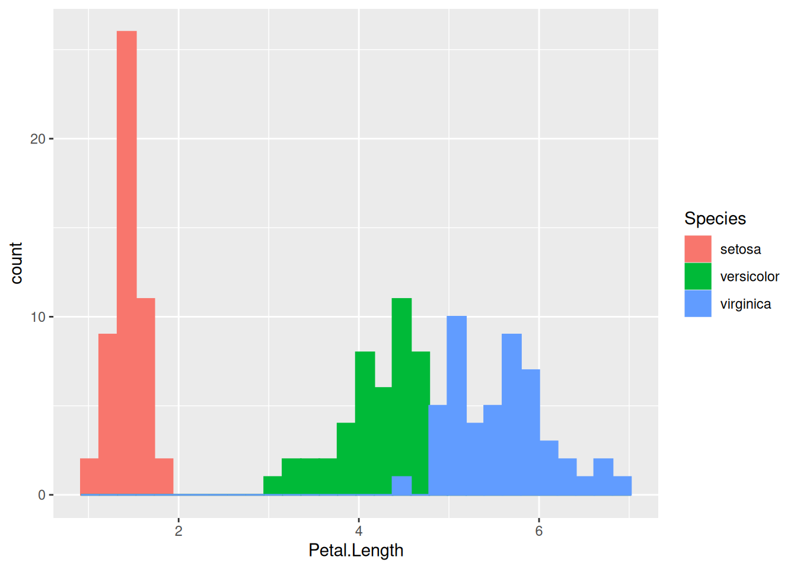
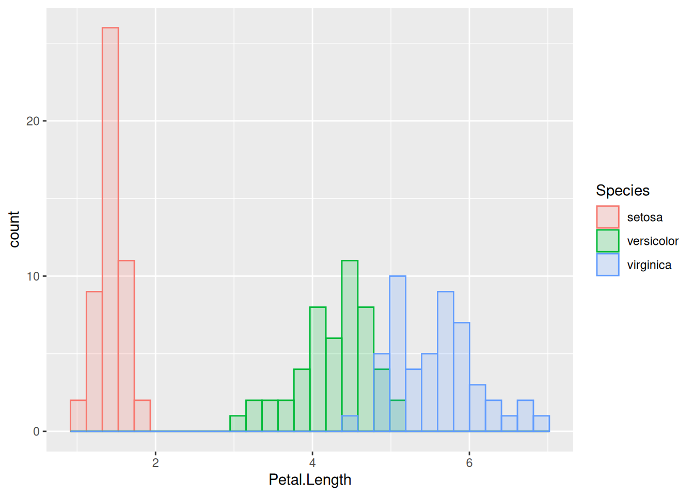
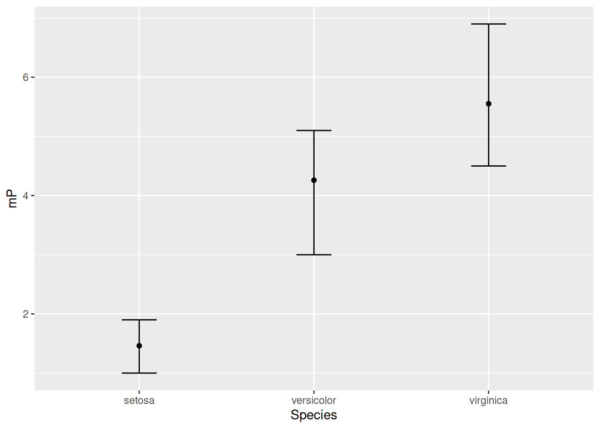
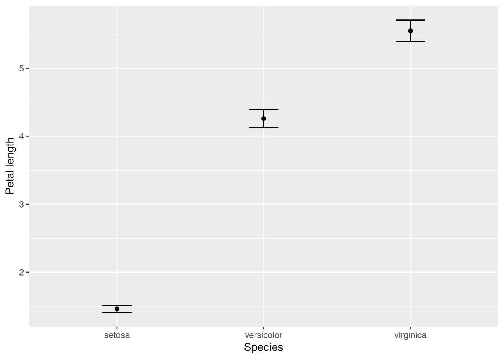

In science, we want clear and informative plots. Each figure should make it obvious what data you are plotting, what the axes, colors, shapes, and size differences represent, and the overall message the figure is conveying. When writing a scientific paper or report, remember that your future readers are busy people. They often do not have the time to delve into the subtleties of overly refined verbal arguments. Instead, they will most often look for the figures to learn what your work is about. You will want to create figures which makes this possible for them to do.
Here we will learn how to create accessible, publication-quality scientific graphs in a simple way. We do this using the R package ggplot2 which is a standard part of the tidyverse. The ggplot2 package follows a very special philosophy for creating figures that was originally proposed by Leland Wilkinson (2006). The essence of this view is that, just like the grammar of sentences, graphs have fixed “grammatical” components whose specification defines the plot. The grand idea is that the data ought not be changed in order to display it in different formats. For instance, the same data should be possible to represent either as a box plot, or as a histogram, without changing their format.
This last claim needs to be qualified somewhat. It is more accurate to say that one should not need to change the data as long as they are in tidy format. As a reminder, “tidy data” means that every variable is in its own column, and every observation is in its own row (Section 6.2). In case the data are not tidy, one should first wrangle them into such form, for example by using pivot_longer. While this step is not always required (especially for simpler graphs), it can be very useful to tidy the data before analyzing and plotting them when working with larger, more complex datasets.
7.2 Basic ggplot2 usage
To see how ggplot2 works, let us load tidyverse, and then use the built-in iris dataset to create some figures. As a reminder, here is what the data look like:
Let us, as a first step, create a plot where sepal length (x-axis) is plotted against petal length (y-axis), with the points referring to different species shown in different colors:
Here we defined the data (iris; feel free to use pipes, as in iris %>% ggplot() + ...), then the aesthetic mappings with aes(), and finally the geometry of how to display the data with geom_point(). The important thing to remember is that the aesthetic mappings are all those aspects of the figure that are governed by the data. For instance, if you wanted to set the color of all points to blue, this would not be an aesthetic mapping, because it applies regardless of what the data are (in case you want to do this, you would have to specify geom_point(colour = "blue") in the last line). The geometry of your plot governs the overall visual arrangement of your data (points, lines, histograms, etc). There are many different geom_s; we will learn about some here, but when in doubt, Google and a ggplot2 cheat sheet are your best friends.
Notice that the different “grammatical” components of the plot (aesthetics, geometry) are added to the plot, using the + symbol for addition. This is due to a somewhat unfortunate historical accident. As it happens, ggplot2 is older than the rest of the tidyverse, and so when it was first designed, the pipe operator %>% did not yet exist. This means that within the creating of a ggplot graph, one must use + to compose the various graph elements; but outside that, the usual %>% is used for function composition.
To look at a different kind of geometry, let us create a histogram of the petal lengths. This is done using geom_histogram:
We see two clusters of data. Why is that? One might suspect that this is because of a species-level difference. To check if that is the case, let us color the histogram by species:
(A color legend was created automatically on the right.) This changes the color of the outline of the histograms, but not the color of their fill. To do so, we need to change the fill color as well, which is a separate aesthetic property:
This is fine, but now the histogram bars of different species are stacked on top of one another. This means that, for example at around a petal length of 5 cm where individuals of both Iris versicolor and I. virginica are found, the green bar on top of the blue one does not begin from the bottom of the y-axis at 0, but from wherever the blue bar ends and the green one begins (in our case, from around 10 upwards). So the number of I. versicolor individuals in the 5 cm bin is not 12, but only 2.
It may be easier to interpret the histogram if all bars start at the bottom, even if this means that the bars will now overlap to an extent. To achieve this overlap, one simply has to add the argument position = "identity" to geom_histogram:
(There are other options as well, such as position = "dodge" – feel free to experiment. In general, you can learn what options each of the geom_s have by taking a look at their help pages, or by asking Google.) The figure above is almost perfect; the one remaining problem is that the bars belonging to different species cover each other completely. So let us change the fill’s transparency, which is called alpha in ggplot. The alpha property can take on any value between 0 (fully transparent object, to the point of invisibility) to 1 (fully solid object with no transparency, like above; this is the default). Setting it to 0.2 (say) will finally fully reveal the distribution of each species:
There are plenty of other geom_s as well, such as geom_boxplot, geom_violin, etc. Let us try geom_boxplot for instance. Let us create one box plot of the distribution of petal lengths for each species. Putting the species along the x-axis and petal length along the y-axis:
iris %>%ggplot() +aes(x = Species, y = Petal.Length) +geom_boxplot()

Although this is sufficient, one should feel free to make the plots prettier. For instance, one could use colors, like before. One can also use different themes. There are pre-defined themes such as theme_classic(), theme_bw(), and so on. For example, using theme_bw() gets rid of the default gray background and replaces it with a white one. The version of the graph below applies this theme, and also changes the color and fill to be based on species identity:
iris %>%ggplot() +aes(x = Species, y = Petal.Length, colour = Species, fill = Species) +geom_boxplot(alpha =0.2) +theme_bw()

7.3 Summaries and confidence intervals
Providing appropriate information on experimental errors is a hallmark of any credible scientific graph. Choose a type of error based on the conclusion that you want the reader to draw. While the standard deviation represents the dispersion of the data, the standard error and confidence intervals report the certainty of the estimate of a value (e.g., certainty in estimating the mean). Let us see examples of each.
Let us first obtain the mean and the standard deviation of the petal lengths for each species. We then would like to plot them. To do this, we proceed by creating a workflow which first uses group_by and summarise to obtain the required statistics (means and standard deviations), and then uses these data for plotting. One can include all these steps in a logical workflow:
iris %>%group_by(Species) %>%# Perform summary calculations for each speciessummarise(mP =mean(Petal.Length), # Mean petal lengthsP =sd(Petal.Length)) %>%# Standard deviation of petal lengthungroup() %>%# Ungroup dataggplot() +# Start plottingaes(x = Species, y = mP, ymin = mP - sP, ymax = mP + sP) +# Mean +/- sdgeom_point() +# This takes the y aesthetic, for plotting the meangeom_errorbar(width =0.2) # Takes the ymin and ymax aesthetics
Note that the y-axis label is not very descriptive. This is because it inherited the name of the corresponding data column, mP. There are multiple ways to change it; the simplest is to add ylab("Petal length") to the plot. Another way of doing so is discussed in Chapter 8.
In case we want to calculate the 95% confidence intervals of the mean values, we first obtain some necessary summary statistics: the number of observations (sample size) in each group; the standard error of the mean (standard deviation divided by the square root of the sample size); and finally, the confidence interval itself (read off from the t-distribution, with one fewer degrees of freedom than the sample size). We can then include these confidence intervals on top of the mean values:
iris %>%group_by(Species) %>%summarise(mP =mean(Petal.Length), # Mean petal length per speciessP =sd(Petal.Length), # Standard deviation per speciesN =n(), # Sample size (number of observations) per speciesSEM = sP /sqrt(N), # Standard error of the meanCI = SEM *qt(1-0.025, N -1)) %>%# Confidence interval,# read off at 1 - 0.025 because +/- 2.5% adds up to 5%ggplot() +aes(x = Species, y = mP, ymin = mP - CI, ymax = mP + CI) +geom_point(colour ="steelblue", fill ="steelblue") +geom_errorbar(width =0.2, colour ="steelblue") +ylab("Petal length") +theme_bw()
In the literature, it is common to encounter bar-and-whisker plots to represent the same information as above. These replace the points showing the means with bars that start from zero. One should be aware of how to read and make such graphs. This is almost trivially simple: all one needs to do is replace geom_point with geom_col.
iris %>%group_by(Species) %>%summarise(mP =mean(Petal.Length),sP =sd(Petal.Length),N =n(),SEM = sP /sqrt(N),CI = SEM *qt(1-0.025, N -1)) %>%ggplot() +aes(x = Species, y = mP, ymin = mP - CI, ymax = mP + CI) +# Below we change geom_point to geom_col (for "column"):geom_col(alpha =0.4, colour ="steelblue", fill ="steelblue") +geom_errorbar(width =0.2, colour ="steelblue") +ylab("Petal length") +theme_bw()

Warning
While means and their confidence intervals are often displayed with bar-and-whisker plots, there is an important reasons why this is not a good idea. By starting the bars from zero, the plot implies that zero is a natural point of comparison for all the data. Unfortunately, this can visually distort the information we wish to convey. Consider the following graph:
tibble(Species =c("species 1", "species 2"),Average =c(148, 152),CI =c(0.8, 0.9)) %>%ggplot() +aes(x = Species, y = Average, ymin = Average - CI, ymax = Average + CI) +geom_col(alpha =0.4, colour ="steelblue", fill ="steelblue") +geom_errorbar(width =0.2, colour ="steelblue") +ylab("Trait value") +theme_bw()

It is impossible to see whether there are any relevant differences between the two species. The following is exactly the same, but with the mean values shown with points instead of bars:
It is now obvious that the two observations are distinct. Due to this problem, my recommendation is to avoid bar-and-whisker plots and simply use point-and-whisker ones instead.
7.4 Exercises
Fauchald et al. (2017) tracked the population size of various herds of caribou in North America over time, and correlated population cycling with the amount of vegetation and sea-ice cover. The part of their data that we will use consists of two files: pop_size.tsv (data on herd population sizes), and sea_ice.tsv (on sea levels of sea ice cover per year and month).
The file sea_ice.tsv is in human-readable, wide format. Note however that the rule “each set of observations is stored in its own row” is violated. We would like to organize the data in a tidy tibble with four columns: Herd, Year, Month, and Cover. To this end, apply the function pivot_longer to columns 3-14 in the tibble, gathering the names of the months in the new column Month and the values in the new column Cover.
Use pop_size.tsv to make a plot of herd sizes through time. Let the x-axis be Year, the y-axis be population size. Show different herds in different colors. For the geometry, use points.
The previous plot is actually not that easy to see and interpret. To make it better, add a line geometry as well, which will connect the points with lines.
Make a histogram out of all population sizes in the data.
Make the same histogram, but break it down by herd, using a different color and fill for each herd.
Instead of a histogram, make a density plot with the same data and display (look up geom_density if needed).
Make box plots of the population size of each herd. Along the x-axis, each herd should be separately displayed; the y-axis should be population size. The box plots should summarize population sizes across all years.
Let us go back to sea_ice.tsv. Make the following plot. Along the x-axis, have Year. Along the y-axis, Month. Then, for each month-year pair, color the given part of the plot darker for lower ice cover and lighter for more. (Hint: look up geom_tile if needed.) Finally, make sure to do all this only for the herd with the label WAH (filter the data before plotting).
Fauchald, Per, Taejin Park, Hans Tømmervik, Ranga Myneni, and Vera Helene Hausner. 2017. “Arctic greening from warming promotes declines in caribou populations.”Science Advances 3 (4): e1601365. https://doi.org/10.1126/sciadv.1601365.
Wilkinson, Leland. 2006. The Grammar of Graphics. Secaucus, NJ, USA: Springer Science & Business Media.